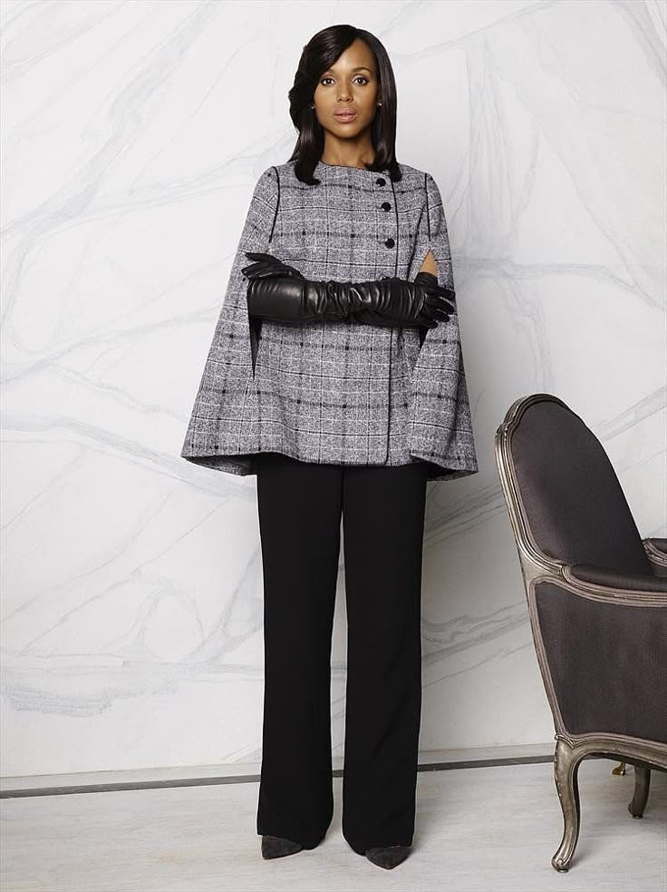
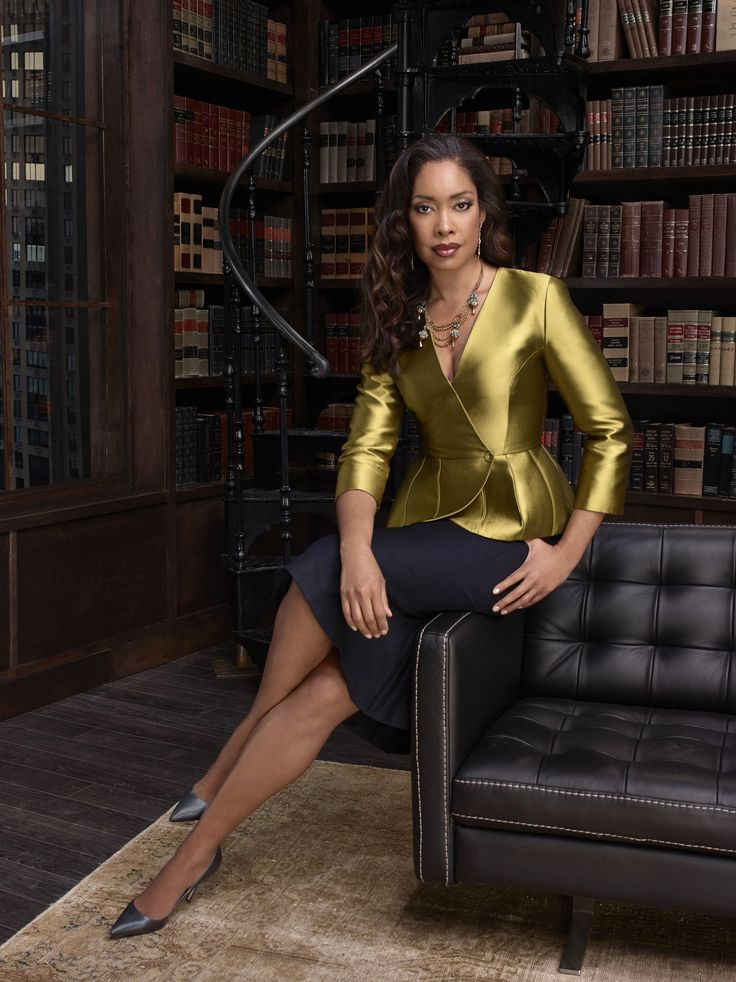
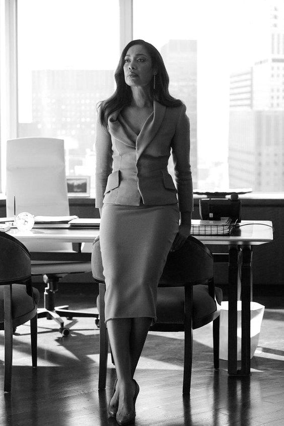

Framed in Film



Olivia Pope is positioned frontally within a controlled frame.Her posture remains upright and symmetrical, while the cape and gloves construct athority through composure rather than movement.
Jessica Pearson is framed within architectural interiors that mirror her authority. Glass walls, long tables, and elevated sightlines reinforce her vertical dominance within the composition. Her posture is still, rarely expansive, and her gestures are measured rather than expressive. Authority is constructed through spatial positioning: she stands while others sit, she occupies the centerline of the frame, and silence functions as leverage. The camera does not chase her movement — it stabilizes around her presence. Power here is not spectacle; it is control over the room’s geometry.